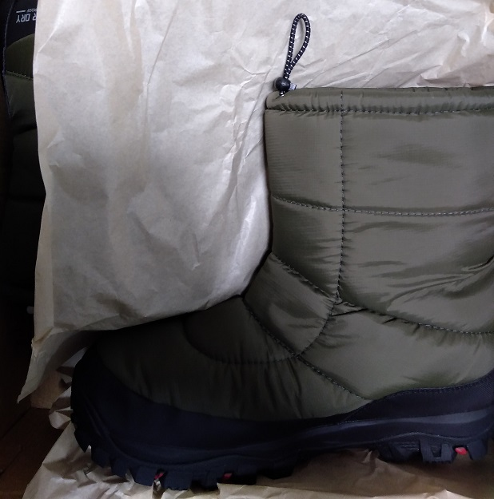

<!DOCTYPE html>
<html>

<head><meta name="generator" content="Hexo 3.8.0">
  <meta charset="utf-8">
  
    <title>
      
        天体画像処理研究会第一回オンラインミーティング | 
            ほしよみ大学生のブログ
    </title>
    <meta name="viewport" content="width=device-width">
    <meta name="description" content="あいさつこんにちは．最初にタイトルとは関係ないですが，冬観測用にブーツを導入してみました．  これまではずっとサイズぴったしな普通の靴にカイロを貼ってギチギチの状態で観測をしていたのですが，これでかなり暖かくなるかなと信じています（というか，導入するのが遅すぎた）．それから，近々（個人的に）嬉しいお知らせを投稿できると思います．お楽しみに(？)．">
<meta name="keywords" content="写真,天体写真,画像処理">
<meta property="og:type" content="article">
<meta property="og:title" content="天体画像処理研究会第一回オンラインミーティング">
<meta property="og:url" content="http://dabokun.github.io/2020/12/06/00000043-asimproc-2020-12/index.html">
<meta property="og:site_name" content="ほしよみ大学生のブログ">
<meta property="og:description" content="あいさつこんにちは．最初にタイトルとは関係ないですが，冬観測用にブーツを導入してみました．  これまではずっとサイズぴったしな普通の靴にカイロを貼ってギチギチの状態で観測をしていたのですが，これでかなり暖かくなるかなと信じています（というか，導入するのが遅すぎた）．それから，近々（個人的に）嬉しいお知らせを投稿できると思います．お楽しみに(？)．">
<meta property="og:locale" content="ja">
<meta property="og:image" content="http://dabokun.github.io/2020/12/06/00000043-asimproc-2020-12/card.jpg">
<meta property="og:updated_time" content="2021-06-07T14:57:04.035Z">
<meta name="twitter:card" content="summary_large_image">
<meta name="twitter:title" content="天体画像処理研究会第一回オンラインミーティング">
<meta name="twitter:description" content="あいさつこんにちは．最初にタイトルとは関係ないですが，冬観測用にブーツを導入してみました．  これまではずっとサイズぴったしな普通の靴にカイロを貼ってギチギチの状態で観測をしていたのですが，これでかなり暖かくなるかなと信じています（というか，導入するのが遅すぎた）．それから，近々（個人的に）嬉しいお知らせを投稿できると思います．お楽しみに(？)．">
<meta name="twitter:image" content="http://dabokun.github.io/2020/12/06/00000043-asimproc-2020-12/card.jpg">
<meta name="twitter:creator" content="@dabo_pic">
      
        <link rel="alternative" href="/atom.xml" title="ほしよみ大学生のブログ" type="application/atom+xml">
        
          
            <link rel="icon" href="/images/favicon.png">
            
              <link rel="stylesheet" href="/css/style.css">
                <!--[if lt IE 9]><script src="//html5shiv.googlecode.com/svn/trunk/html5.js"></script><![endif]-->
                
                  <script data-ad-client="ca-pub-1350688970555904" async src="https://pagead2.googlesyndication.com/pagead/js/adsbygoogle.js"></script>
</head></html>
<body>
  <div id="container">
    <div class="mobile-nav-panel">
	<i class="icon-reorder icon-large"></i>
</div>
<header id="header">
	<h1 class="blog-title">
		<a href="/">ほしよみ大学生のブログ</a>
	</h1>
	<nav class="nav">
		<ul>
			<li><a href="/">Home</a></li><li><a href="/categories">Categories</a></li><li><a href="/tags">Tags</a></li><li><a href="/archives">Archives</a></li><li><a href="/about">About</a></li><li><a href="/work">Work</a></li>
			<li><a id="nav-search-btn" class="nav-icon" title="Search"></a></li>
			<li><a href="https://github.com/dabokun"></a>
			</li>
			<li><a href="https://twitter.com/dabo_pic"></a></li>
			<li><a href="/atom.xml" id="nav-rss-link" class="nav-icon" title="RSS Feed"></a>
			</li>
		</ul>
	</nav>
	<div id="search-form-wrap">
		<form action="//google.com/search" method="get" accept-charset="UTF-8" class="search-form"><input type="search" name="q" class="search-form-input" placeholder="Search"><button type="submit" class="search-form-submit">&#xF002;</button><input type="hidden" name="sitesearch" value="http://dabokun.github.io"></form>
	</div>
</header>
    <div id="main">
      <article id="post-00000043-asimproc-2020-12" class="post">
	<footer class="entry-meta-header">
		<span class="meta-elements date">
			<a href="/2020/12/06/00000043-asimproc-2020-12/" class="article-date">
  <time datetime="2020-12-06T11:19:03.000Z" itemprop="datePublished">2020-12-06</time>
</a>
		</span>
		<span class="meta-elements author">astr0dab0</span>
		<div class="commentscount">
			
			<a href="http://dabokun.github.io/2020/12/06/00000043-asimproc-2020-12/#disqus_thread" class="article-comment-link">Comments</a>
			
		</div>
	</footer>
	
	<header class="entry-header">
		
  
    <h1 class="article-title entry-title" itemprop="name">
      天体画像処理研究会第一回オンラインミーティング
    </h1>
  

	</header>
	<div class="entry-content">
		
		
		<div id="toc" class="toc-article">
			<p class="toc-title">目次</p>
			<ol class="toc"><li class="toc-item toc-level-3"><a class="toc-link" href="#あいさつ"><span class="toc-number">1.</span> <span class="toc-text">あいさつ</span></a></li><li class="toc-item toc-level-3"><a class="toc-link" href="#天体画像処理研究会第一回オンラインミーティングをやってみた"><span class="toc-number">2.</span> <span class="toc-text">天体画像処理研究会第一回オンラインミーティングをやってみた</span></a></li></ol>
		</div>
		
		<h3 id="あいさつ"><a href="#あいさつ" class="headerlink" title="あいさつ"></a>あいさつ</h3><p>こんにちは．最初にタイトルとは関係ないですが，冬観測用にブーツを導入してみました．</p>
<p></p>
<p>これまではずっとサイズぴったしな普通の靴にカイロを貼ってギチギチの状態で観測をしていたのですが，これでかなり暖かくなるかなと信じています（というか，導入するのが遅すぎた）．<br>それから，近々（個人的に）嬉しいお知らせを投稿できると思います．お楽しみに(？)．</p>
<a id="more"></a>
<h3 id="天体画像処理研究会第一回オンラインミーティングをやってみた"><a href="#天体画像処理研究会第一回オンラインミーティングをやってみた" class="headerlink" title="天体画像処理研究会第一回オンラインミーティングをやってみた"></a>天体画像処理研究会第一回オンラインミーティングをやってみた</h3><p>さて，タイトルの通り，先日土曜日の夜の時間を使って Zoom でオンラインミーティングを開催してみました．若輩者の私の提案にも関わらず，私を除いて10名ほどの方にご参加いただきました．ありがとうございました．<br>初回ということもあって，まずは言い出しっぺの私が，自分がやっている研究についてと，その研究を天体画像処理に活かすことはできないかという提案のお話をさせていただきました．この話は今年中止になってしまった CANP という天体写真を撮っている方のオフラインの集いがもし開催されていたら話したかった内容で，私と同年代の学生の方々相手には話したことがあった内容ですが，それ以上の年代の方々にはあまり話したことがなかった内容でした．私の研究などについてここに事細かく書くということはしませんが，結果として，多くの貴重な意見をいただくことができました．<br>私が開発に携わっているフレームワークはプロセスの管理が容易なビジュアルプログラミング環境なのですが，ソフトウェアのエンジニアの <a href="https://twitter.com/jaialkdanel" target="_blank" rel="noopener">Iwai さん</a>からは，ビジュアルプログラムだと diff（変更点）をとるのがちょっと面倒であるとか，皆さんご存知 <a href="http://hoshizolove.blog.jp/" target="_blank" rel="noopener">Sam さん</a>からは（天体写真は）芸術思考であるとみなしているアマチュアの人からすると科学的な出自管理をウリにするのはあまりウケないのでは，とか，<a href="http://bokujin555.cocolog-nifty.com/" target="_blank" rel="noopener">木人さん</a>からは，結局素材のクオリティによって処理は異なってくるので，あまり同じ処理を別の画像に施すということはあまりないのでは，むしろ，素材からどこまでの画像ができるのかをコンピュータがサジェストできるといいよね，だとか，これまで私が考えてきたもの，あまり深く考えてこなかったものを含め，「たしかになあ」と思わせられるツッコミをたくさん頂戴いたしました．一方で，一つの試みとしてそういったソフトウェアを作っていくのはコミュニティを活発にしていけるという意味では悪くはないと思っていただけているのかなとも思われ，個人的には励みになりました．<br>現在流行りのPixInsight（私もそろそろ導入を検討しているところであります）や，Adobe 製品との棲分けなども話題として上がりまして，多くの議論ができたかと思っています．<br>録画するのをすっかり忘れてしまったため，議事録をしっかり残すことができずもったいないことをしてしまったという気持ちですが，改めてご参加頂いた方々にはお礼を申し上げます．来月の満月期もまた何か企画してみたいと思います．</p>
<p>それでは．</p>

		
	</div>
	<footer class="article-footer">
		<a href="https://twitter.com/intent/tweet?text=%E5%A4%A9%E4%BD%93%E7%94%BB%E5%83%8F%E5%87%A6%E7%90%86%E7%A0%94%E7%A9%B6%E4%BC%9A%E7%AC%AC%E4%B8%80%E5%9B%9E%E3%82%AA%E3%83%B3%E3%83%A9%E3%82%A4%E3%83%B3%E3%83%9F%E3%83%BC%E3%83%86%E3%82%A3%E3%83%B3%E3%82%B0｜%E3%81%BB%E3%81%97%E3%82%88%E3%81%BF%E5%A4%A7%E5%AD%A6%E7%94%9F%E3%81%AE%E3%83%96%E3%83%AD%E3%82%B0&url=http://dabokun.github.io/2020/12/06/00000043-asimproc-2020-12/" class="twitter-share-button" target="_blank" title="Twitter"></a>
		<script async src="https://platform.twitter.com/widgets.js" charset="utf-8"></script>

		<div id="fb-root"></div>
		<script async defer crossorigin="anonymous" src="https://connect.facebook.net/ja_JP/sdk.js#xfbml=1&version=v4.0"></script>
		<div class="fb-share-button" data-href="http://dabokun.github.io/2020/12/06/00000043-asimproc-2020-12/" data-layout="button_count" data-size="small"><a target="_blank" href="https://www.facebook.com/sharer/sharer.php?u=https%3A%2F%2Fdabokun.github.io%2F&amp;src=sdkpreparse" class="fb-xfbml-parse-ignore">シェア</a></div>
	</footer>
	<footer class="entry-footer">
		<div class="entry-meta-footer">
			<span class="category">
				
  <div class="article-category">
    <a class="article-category-link" href="/categories/processing/">画像処理</a>
  </div>

			</span>
			<span class=" tags">
				
  <ul class="article-tag-list"><li class="article-tag-list-item"><a class="article-tag-list-link" href="/tags/photography/">写真</a></li><li class="article-tag-list-item"><a class="article-tag-list-link" href="/tags/astrophotography/">天体写真</a></li><li class="article-tag-list-item"><a class="article-tag-list-link" href="/tags/processing/">画像処理</a></li></ul>

			</span>
		</div>
	</footer>
	
	
<nav id="article-nav">
  
    <a href="/2020/12/24/00000044-2020-12-recent/" id="article-nav-newer" class="article-nav-link-wrap">
      <strong class="article-nav-caption">Newer</strong>
      <div class="article-nav-title">
        
          最近のこと（遠征とか）
        
      </div>
    </a>
  
  
    <a href="/2020/12/01/00000042-clean-failure-maaya-alt/" id="article-nav-older" class="article-nav-link-wrap">
      <strong class="article-nav-caption">Older</strong>
      <div class="article-nav-title">
        
          FSQ前玉清掃失敗と坂本真綾ALT
        
      </div>
    </a>
  
</nav>

	
</article>


<section id="comments">
	<div id="disqus_thread">
		<noscript>Please enable JavaScript to view the <a href="//disqus.com/?ref_noscript">comments powered by
				Disqus.</a></noscript>
	</div>
</section>

    </div>
    <div class="mb-search">
  <form action="//google.com/search" method="get" accept-charset="utf-8">
    <input type="search" name="q" results="0" placeholder="Search">
    <input type="hidden" name="q" value="site:dabokun.github.io">
  </form>
</div>
<footer id="footer">
	<h1 class="footer-blog-title">
		<a href="/">ほしよみ大学生のブログ</a>
	</h1>
	<span class="copyright">
		&copy; 2021 astr0dab0<br>
		Modify from <a href="http://sanographix.github.io/tumblr/apollo/" target="_blank">Apollo</a> theme, designed by <a href="http://www.sanographix.net/" target="_blank">SANOGRAPHIX.NET</a><br>
		Powered by <a href="http://hexo.io/" target="_blank">Hexo</a>
	</span>
</footer>
    
<script>
  var disqus_shortname = 'astr0dab0';
  
  var disqus_url = 'http://dabokun.github.io/2020/12/06/00000043-asimproc-2020-12/';
  
  (function(){
    var dsq = document.createElement('script');
    dsq.type = 'text/javascript';
    dsq.async = true;
    dsq.src = '//go.disqus.com/embed.js';
    (document.getElementsByTagName('head')[0] || document.getElementsByTagName('body')[0]).appendChild(dsq);
  })();
</script>


<script src="//ajax.googleapis.com/ajax/libs/jquery/2.0.3/jquery.min.js"></script>


<link rel="stylesheet" href="/fancybox/jquery.fancybox.css" media="screen" type="text/css">
<script src="/fancybox/jquery.fancybox.pack.js"></script>


<script src="/js/script.js"></script>
  </div>
</body>
</html>